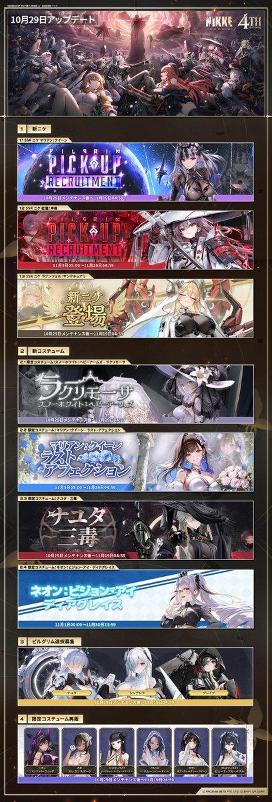
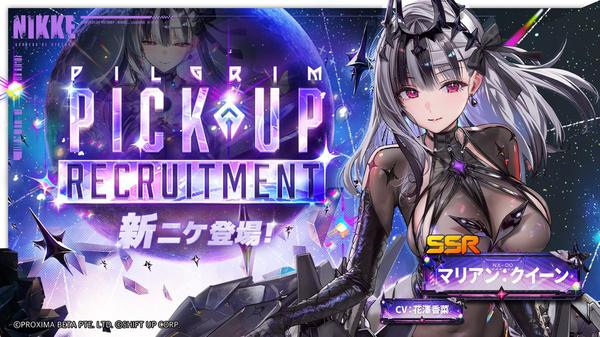
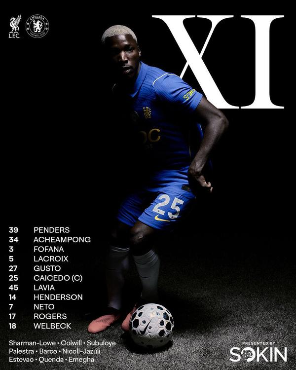

🇯🇵 日本の主要ニュース
🌍 世界の主要ニュース
スペインで高速鉄道衝突、68人死亡スペイン中部で28日、高速鉄道の列車どうしが衝突し68人が死亡しました。停止していた先行列車に後続列車が追突したとみられ、同じ路線では1月にも脱線事故がありました。
出典：NHK／BBC
カナダ中銀、約3年ぶりに利上げカナダ中央銀行は中東情勢を背景にインフレ長期化のリスクがあるとして、政策金利を0.25%引き上げ2.5%にしました。利上げはおよそ3年ぶりです。
出典：NHK
🤖 AIニュース
💻 PC・ガジェットニュース
🔥 Xのトレンド（日本）
ジャンルで絞らず上位20件を掲載。「未確認」はX上の投稿だけを根拠にしたもので、報道機関による裏付けはありません。

スマホゲーム「勝利の女神：NIKKE」が4周年を迎え、29日朝のメンテナンス明けに4周年「MARIA-n」アップデートが実装されました。新ストーリーや新キャラ、新衣装の追加にファンが沸いています。
出典：NIKKE公式X
NIKKEとXのコラボ企画「X特別地上奪還戦」。公式をフォローし #NIKKE4周年 付きで「参戦レポート」を投稿するとiPhone Duoなどが当たるキャンペーン（11月5日まで）で、投稿が大量に流れています。
出典：NIKKE公式X
上のNIKKE×Xキャンペーンの「参戦レポート」に含まれる定型の言葉とみられ、参加投稿と一緒にトレンド入りしています。
⚠ 未確認（X情報のみ）
これもNIKKE×Xキャンペーンの参加投稿で並んで使われている言葉です。キャンペーン投稿の量でトレンド上位に入っています。
⚠ 未確認（X情報のみ）
NIKKE×X「特別地上奪還戦」の参戦レポート投稿で使われている言葉です。賞品目当ての参加投稿が多く、無関係なハッシュタグを混ぜたスパム的な投稿も見られます。
⚠ 未確認（X情報のみ）
NIKKE 4周年キャンペーン関連の言葉で、「参戦報告」などと並んで投稿されています。
⚠ 未確認（X情報のみ）
フジテレビ「めざましテレビ」とディズニーのプレゼント企画。今朝のお題は「ドラゴンに変身するヴィランは？」で、引用投稿で答えを予想して応募する仕組みです。
出典：めざましテレビ公式X

NIKKEで人気キャラ「マリアン：クイーン」（CV:花澤香菜）のピックアップ募集が29日のメンテ明けから始まり、「やっと会える」「引くぞ」と待ちわびたファンの投稿が相次いでいます。
出典：NIKKE公式X
NIKKE公式の「決戦を前に」PVに合わせた投稿キャンペーン。#NIKKE決戦を前に を付けて今の気持ちを投稿すると、抽選で4周年記念メダルが当たります（11月4日まで）。
出典：NIKKE公式X
NIKKEの「決戦を前に」キャンペーンに関連する言葉で、参加投稿と一緒に広がっています。
⚠ 未確認（X情報のみ）
「#めざましディズニー」のクイズ「ドラゴンに変身するヴィランは？」の答えとして『眠れる森の美女』のマレフィセントを挙げる投稿が殺到しています。
⚠ 未確認（X情報のみ）
FM802の朝の番組（DJタクティー）で出されるECCの英語クイズへの応募タグ。今朝は「2番」と答える投稿が多く、スピーカーのプレゼントを狙う声が目立ちます。
⚠ 未確認（X情報のみ）
10月29日は「和服の日」。ほかに「おしぼりの日」「インターネット誕生日」「ドリアの日」などもあり、今日の記念日を紹介する投稿が並んでいます。
⚠ 未確認（X情報のみ）

カラバオカップ4回戦リヴァプール対チェルシーで、チェルシーが敗退。日本のファンの間ではDFフォファナのプレーへの不満が多く投稿されています。
⚠ 未確認（X情報のみ）
同じリヴァプール対チェルシー戦の話題。リヴァプール側のツィミカスがPKの5番目のキッカーだったことなどが話題になっています（試合の詳細は未確認）。
⚠ 未確認（X情報のみ）
同じ試合でチェルシーの先発GKを務めたペンダースについて、「めちゃくちゃ良かった」と好守をたたえる声が上がっています。
⚠ 未確認（X情報のみ）
木曜朝のあいさつ投稿。診断メーカーの「もくもくもくようび～」という定型ネタが流行り、続きの一文を変えて投稿する人が多く見られます。
⚠ 未確認（X情報のみ）
10月29日は「おしぼりの日」。和服の日などと並んで今日の記念日として紹介されています。
⚠ 未確認（X情報のみ）
楽天が元オリックスの増井浩俊氏（42）や小笠原道大氏らを来季コーチに招へいすると報じられ、解説者としての増井さんを惜しむ声や、元日本ハム勢が集まることへの驚きが広がっています。
出典：スポーツ報知（Yahoo!ニュース）
10月29日は1969年にインターネットの原型ARPANETで初めて通信が行われた日にちなむ「インターネット誕生日」で、記念日紹介の投稿が多く見られます。
⚠ 未確認（X情報のみ）
Grok Bot がまとめました。